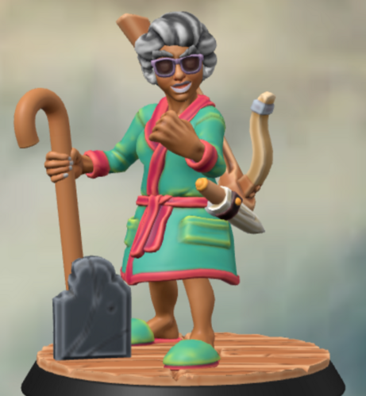

Mama Bibi - Is This Anything?

Meet Beatrice Balfour
(Please, call her Mama Bibi).
Beatrice grew up in a small seaside town, and often went sailing with her parents during childhood.
Once she became an adult, she went adventuring on the high seas. Along her adventures, she met a young, strikingly handsome halfling paladin who would eventually become her husband.
Beatrice and Blaze sailed for decades, just the two of them on a modest boat. Occasionally, they would take up temporary residence in a town for a while, and then would go back to their home on the sea.
They never had children. And anyway, they preferred the company of each other. Until Beatrice noticed that Blaze was becoming increasingly easy to anger, becoming confused, hard to talk to. Old age had taken his eyes, his ears, his body, and his mind. After several years of this, Blaze gave in to old age and died on the sea.
Beatrice settled down. She sold the boat and found a little home in a little town.
We find her here, a 200 year old halfling who treats everybody like she is their grandma. They’ve even taken to calling her Mama Bibi, and she’s leaned into the name. She is loving, and caring, and comforting, and protecting, and is constantly baking bread and desserts for those she counts as friends.
She still speaks to Blaze. Even in the spirit realm, his ears and his mind aren’t as capable as they once were, but she still dotes on him, asks him for guidance, and speaks to him every day.
Mama Bibi - Lightfoot Halfling Cleric (Grave)
All points go to Charisma, Wisdom, and Intelligence.
Spells focus on Necromancy and Necromancy-adjacent spells, given power
through Blaze (albeit, occasionally a little off the request due to
dementia and hearing loss).
Fights with spells and crossbow from afar, and her slipper across
the back of your head her cane and a dagger in close quarters.